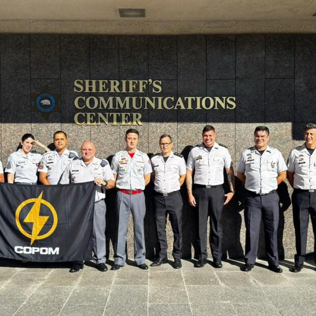
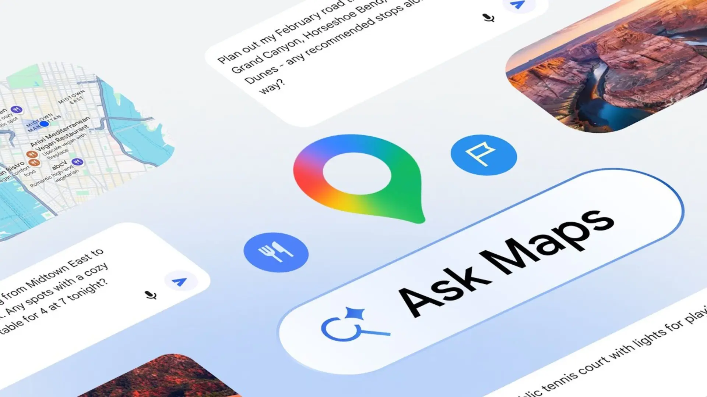
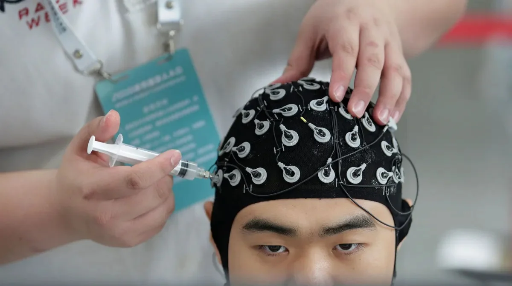
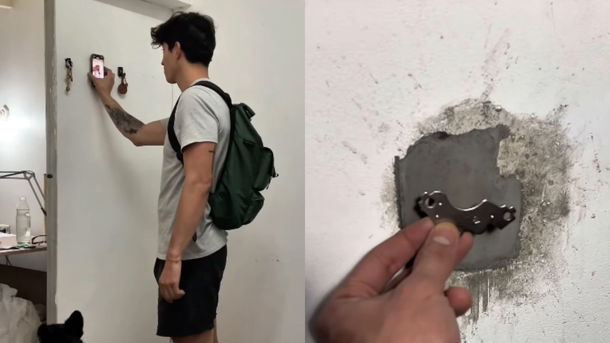
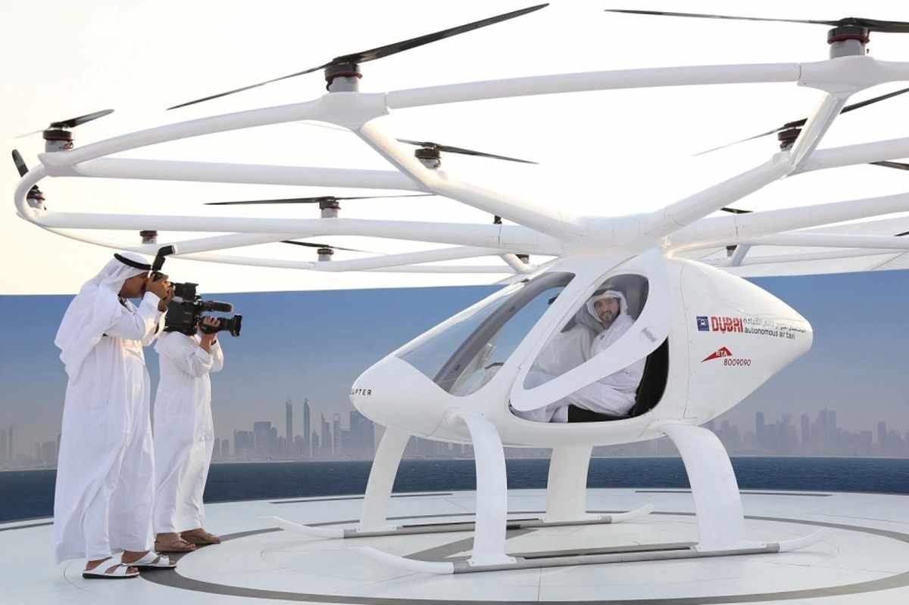
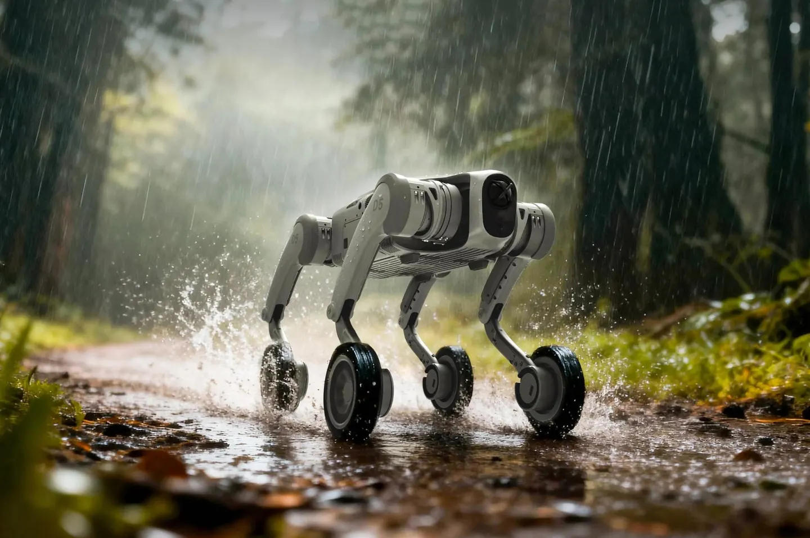

Suspiro
News
Tecnologia e inovação
Aqui você acompanha notícias, projetos e informações sobre Tecnologia e Inovação no Brasil e no mundo

PMDF aprende com EUA para melhorar emergências
Uma missão internacional nos EUA permitiu à Polícia Militar do DF estudar tecnologias e protocolos de atendimento a emergências, visando modernizar o serviço e agilizar respostas no Distrito Federal.
.jpeg) geografiaideal
geografiaidealTecnologia protege cidades de chuvas extremas
Sensores, inteligência artificial e alertas em tempo real ajudam cidades a prever enchentes e deslizamentos, reduzindo riscos e salvando vidas.

Mídia: NeowinGoogle Maps ganha IA “Ask Maps”
O Google lançou o “Ask Maps”, recurso com inteligência artificial que responde perguntas, sugere rotas, paradas e atrações, e transforma o Maps em um assistente de viagem interativo.

gtnoticiasChina lança BCI que devolve movimentos das mãos
A China aprovou o primeiro dispositivo comercial de interface cérebro-computador, capaz de ajudar pacientes paralisados a recuperar movimentos das mãos por meio de uma luva controlada pelos sinais cerebrais.

imagem divugadação instagramParedes sem furos com tecnologia argentina
Estudante cria Ironplac, revestimento que transforma paredes em superfícies magnéticas, permitindo pendurar objetos com ímãs sem furadeiras ou pregos.
IA revoluciona ensino de Biologia
Inteligência artificial e ferramentas digitais tornam o aprendizado de Biologia mais interativo, visual e personalizado, aumentando engajamento e autonomia dos estudantes.

airwayTáxi voador da Uber decola em Dubai
A Uber inicia em 2026 o Uber Air em Dubai, com veículos elétricos que decolam e pousam verticalmente, oferecendo trajetos urbanos rápidos e silenciosos.

forbesCão-robô acompanha aventuras ao ar livre
:A startup chinesa Unitree Robotics criou o AS2, cão robô quadrúpede que corre, carrega equipamentos e enfrenta terrenos difíceis, servindo como parceiro em trilhas e expedições.